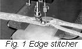
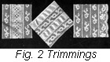
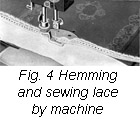

1926—The New-Way Course in Fashionable Clothes-Making
Lesson 15—The Edge Stitcher
There is a little bit of mechanical steel in your box of sewing machine attachments that is easily snapped into place and that does away with a great deal of the time-waste and monotony of ordinary sewing. With it you can positively accomplish what would have seemed to our grandmothers to be "amazing." You can sew fine lace together in a twinkling—sew it together so that the line of stitching will be so straight and fine that it will hardly be noticeable! You will be able to join lace with insertion, lace with ribbon, lace with the foundation material, all without one bit of hand sewing whatever. And you will be able to achieve some splendid trimming innovations that would be practically impossible to do by hand.
Take out your box of attachments. Find your edge stitcher—you will recognize it immediately as it has its name engraved on it. If you haven't one, get one as soon as possible from your sewing machine dealer. Following are step-by-step directions for the use of the edge stitcher. Read them carefully. Study them. And then practice attaching and using the edge-stitcher until you feel that you have completely mastered it.
Attaching the Edge Stitcher
-  Attach the edge-stitcher to the machine in the same manner as the presser foot, being sure, of course, that the presser foot has been removed.
- You will notice that there are a number of different slots on the attachment; they are numbered from one to five and each serves a different purpose in the joining together of laces, insertions, pipings, etc.
- At the side of the attachment there is a small lug which makes the edge-stitcher adjustable for the stitching in relation to the edge of the garment or lace. It is regulated by having the edges of lace and insertion, or lace and material, meeting directly under the tiny hole in the bottom of the lug.
- Your instruction book will tell you in which slot to put lace and in which to put the insertion. Slots vary according to conditions, and you must know just which ones to use. (See "Trimming Suggestions.")
- Always use as fine a needle as is appropriate in relation to the material, and always use very fine thread when sewing laces together.
Trimming Suggestions
There are many uses for the edge-stitcher, many time-saving uses that you—as an expert clothes-maker with a knowledge of all that is correct in the construction of dress—will appreciate and find many occasions to take advantage of. Above are several trimming suggestions that can be incorporated into the making of dresses, blouses or underthings. Study each one carefully. Plan in your mind just how you would use these trimmings on a dress, or on a pretty camisole. Decide which ones you are going to use when you begin to make things-to-wear. And note the directions for the slots in the edge-stitcher to be used.
Fig. 2 shows rows of different kinds of insertion sewed together, alternately. You can see what an infinite amount of time and trouble would have to be exerted if this work were done by hand. It is quite simple when it is done with the help of the edge-stitcher—you will actually enjoy it. To attach rows of insertion use slots Nos. 1 and 4 on the edge-stitcher, and hold the two pieces of material slightly overlapping each other. Be sure the lug is adjusted so that the stitching comes right on the edge.
Here is a very pretty trimming—especially for summer frocks. It is lace stitched alternately to rows of embroidery. If both lace and embroidery are the same width, it makes not difference in which slot they are placed as long as slots 1 and 4 are used. But if the embroidery is wider, the edge of the embroidery should be placed in slot 1 and the lace in slot 4.
Ribbon and lace is an excellent trimming combination—but not so very pleasant to make by hand. With the edge-stitcher it can be made quickly, easily and with perfect stitches that defy the finest stitches of the hand-sewing dressmaker! Simply place the ribbon in slot No. 1 and the lace in slot No. 4 and proceed with the stitching.
Can you conceive of a trimming more attractive and more utterly serviceable than braid folds attached neatly to the garment with the splendid little edge stitcher? With tailor's chalk or basting mark the line which you desire covered with the braid and place the garment under the attachment with the marked line directly under the little hole in the lug. Place the braid in slot No. 1 and stitch as you would for plain machine sewing.
When a neat finish is desired, and one that acts as a trimming as well, the edge stitcher comes again to the fore. Select the color bias fold you wish—it may be white, black or stripes—and insert it in slot No. 1. Now place the edge of the garment to be trimmed in slot No. 5 with the wrong side up. Proceed to sew, and when you have reached the end of the material or garment, you will find that you have one part of your binding stitched correctly in place. The other edge of the binding is stitched in place with the presser foot and plain machine stitching.
Sewing Lace by Hand
When lace is very delicate, or the garment it is going to be attached to as a trimming exceptionally dainty, hand sewing is probably the most satisfactory. In the top of most fine laces will be found a thread a trifle coarser than the rest of the lace. This thread may be used to gather or ruffle the lace to any desired fullness by pulling the thread. But do not pull the thread so roughly that it breaks as this will mar the appearance of the lace; nor should you give the lace so much fullness that its pattern is lost.
To sew lace to material as a trimming proceed in the following manner:
- Place the right side of the lace to the right side of the material, allowing the edges to meet.
- Overhand the two edges together with small even stitches, using thread as fine as the lace and material will allow. The finer the thread, the better the results.
- If a lace edge is to be sewed to insertion, place the right side of the lace to the right side of the insertion, allowing edges to meet, and overhand the two edges together. Lace may be used plain on straight edges and sewed in the same manner as above.
- When sewing lace to a hem, the stitches should be very fine. Only one or two threads should be taken up on the edge of the hem, and just two threads on the edge of the lace. If this rule is not followed, the work may appear coarse and unsightly.
How to Set in Medallion
- Baste the medallion in place with the wrong side of the medallion against the right side of the material, and sew near the outside edge with a very fine overhand or running stitch, using an occasional back stitch.
- Turn to the wrong side and cut the material away within an eighth of an inch of your stitching.
- Clip the material where necessary and oversew the unfinished edge with a tight stitch. If this stitch is fine enough and tight enough, the raw edge will roll and be entirely concealed.
- A medallion may be set in with machine stitchings by placing a paper over the feed when stitching, and substituting machine stitching for the fine running stitch. Trim and oversew in the same way as before.
Hemming and Sewing Lace by Machine
In your box of attachments you will find a foot hemmer. Remove the presser foot from your machine and attach the foot hemmer.
- Insert the material to be hemmed in the spoon of the hemmer, pulling the end back beneath the needle.
- Start your hem and when it is running smoothly stop the machine, lift the hemmer with the presser bar lifter, raise the needle to the highest point, and then carefully pass the end of the lace through the slot in the side of the hemmer, carrying it under the back of the hemmer and on top of the hem.
- Proceed as in ordinary hemming, guiding the lace over the front of the hemmer, keeping it well in the slot so that the needle will catch it each time it passes through the material.
- Practice the use of this attachment, as it saves many hours of hand sewing. In later lessons we will use lace applied both by hand and machine.
Seam Beading
Seam beading is an attractive joining for seams of fine garments, such as infants' wear, fine blouses and dainty undergarments. It may be joined to the edge of the garment with the French seam or the plain seam. Make the French seam as fine as possible. The last stitching must be exactly at the woven edge of the beading.
- If the plain seam is used, stitch exactly at the woven edge.
- Press the seam away from the beading, trim the seam closely, and oversew with fine even stitches.
- Sometimes this beading is set in by hand. To do this, trim the plain material away from either edge of the beading, cutting close to the woven edge.
- Turn back the seam edges of the garment to be joined. This turn must be made one-half the width of the beading back of the line of the seam. It allows for the extra width added by the beading.
- Place the right side of the beading to the right side of the garment, being sure that the edges are even, oversew edges together taking up two or three stitches on the turned edge of the garment, and allowing the thread to pass over the woven edge of the beading.
- Now trim the edge of the seam very closely and oversew with fine stitches.
- The edge of the garment seam may be trimmed close to the line of seam stitching, the edge rolled and oversewed to trimmed beading, if a fine finish is desired. However, it takes practice before one can make very fine beadings, and the more you practice now the better able you will be to cope with this subject later on in the course when you begin to trim dresses and blouses.